How Self-Development & Productivity grabs your attention
Sell control and clarity. The audience feels stuck/scattered—the hook reframes the problem ("it’s not motivation, it’s this") and promises a simple system ("I got 3 hours back every day").
The formula from the PDF — Context Lean → Scroll Stop → Contrarian Snapback — applied to the 33 hooks in this niche.
💡 How to read each card
Each hook below brings the 3 layers stacked: the spoken line (in English, ready to use or adapt), the PT-BR translation, the 🎬 Visual (what to show) and the blue badge with the Text Hook (the short text on screen). The image is a visual reference generated for each example.
the line you narrate/write
the scene that appears on screen
the short 2–3-word overlay
⚠️ Fear & high stakes
Threat, loss, or risk. The brain can’t ignore what seems dangerous—it’s the most primitive "scroll stop." It works when there’s something to lose. 3 hooks in this niche use this pattern.
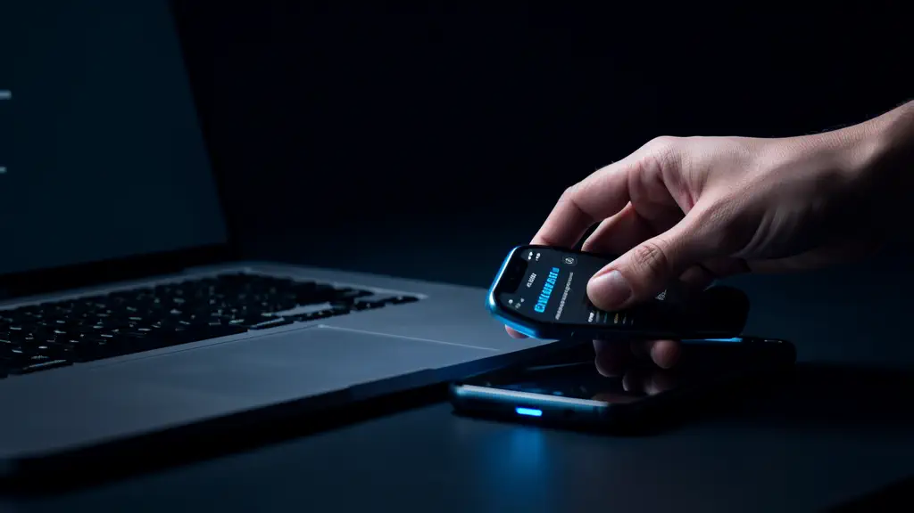
“This is the one thing killing your focus.”
PT: This is what's killing your focus.
🎬 Visual: Phone buzzing next to laptop, hand flipping it face-down.
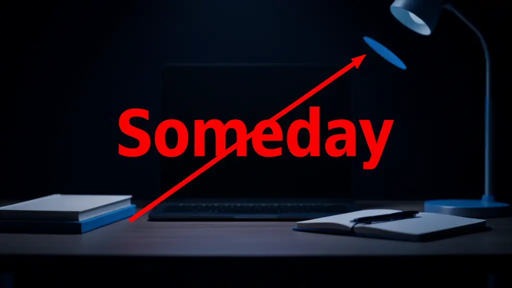
“Most people fail because of this one word.”
PT: Most people fail because of one word.
🎬 Visual: The word “Someday” in red, crossed out.
“Your schedule is lying to you.”
PT: Your schedule is lying to you.
🎬 Visual: Calendar overlay morphing into actual activity footage.
🔄 Contrarian & belief-breaking
The “Contrarian Snapback”: it starts by agreeing with conventional wisdom, then turns the tables (“…isn’t”). The tension between what the person believes and what you claim keeps them watching until the answer appears. 17 hooks in this niche use this pattern.
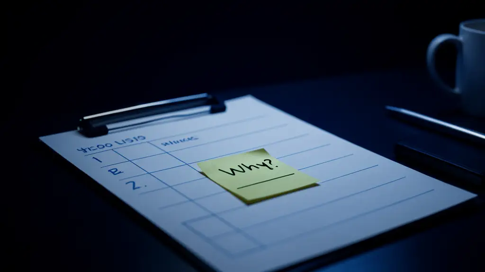
“You don't have a motivation problem — you have this problem.”
PT: You don’t have a motivation problem — you have this problem.
🎬 Visual: To-do list half-complete with sticky note saying “Why?”.
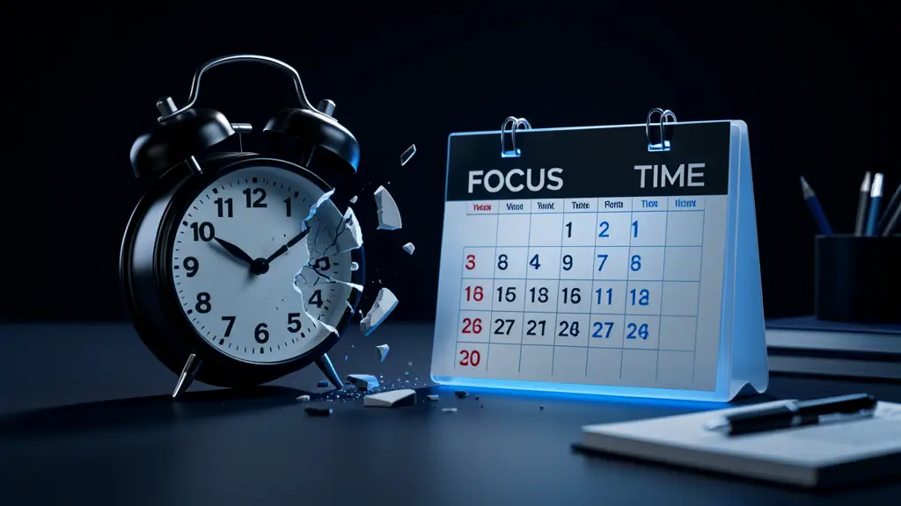
“Waking up early is overrated — here's what works instead.”
PT: Waking up early is overrated—see what works.
🎬 Visual: Alarm clock smashed, replaced by calendar blocking focus time.
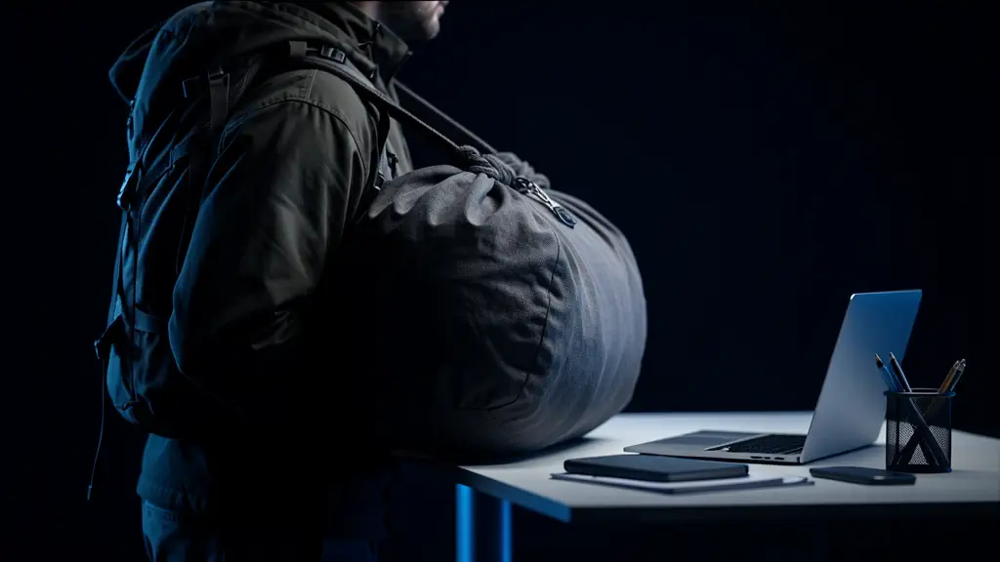
“Most people work harder — the top 1% remove this instead.”
PT: Most people work harder—the top 1% removes this.
🎬 Visual: Heavy bag dropped off a hiker's back.
“You think you need discipline — but you actually need this.”
PT: You think you need discipline — but you need this.
🎬 Visual: Chain breaking around a clock.
“Productivity isn't about doing more… it's about deleting this first.”
PT: Productivity isn't about doing more… it's about deleting this first.
🎬 Visual: Computer desktop being cleared of apps.
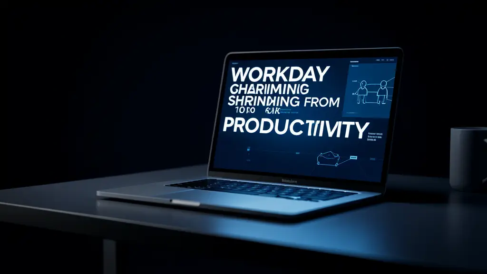
“I got more done by working fewer hours.”
PT: I got more done by working fewer hours.
🎬 Visual: Workday shrinking from 10 to 6 hours, output rising.
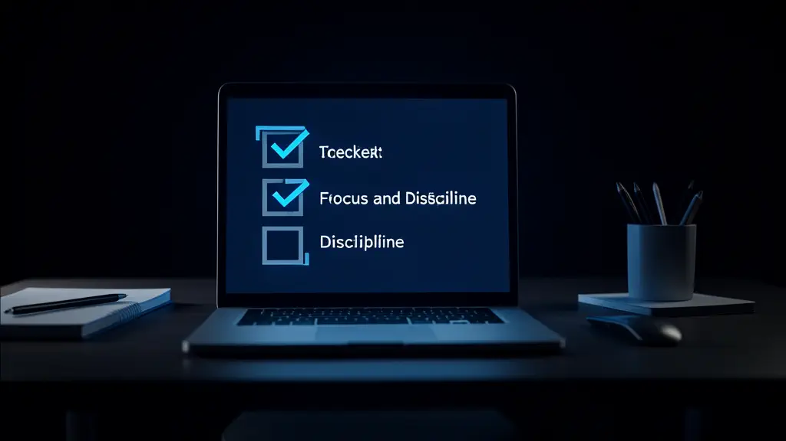
“Your goals are too big — that's the problem.”
PT: Your goals are too big—that’s the problem.
🎬 Visual: Giant checklist replaced with one small task.
“Stop chasing motivation — build momentum instead.”
PT: Stop looking for motivation — build momentum.
🎬 Visual: Dominoes falling in slow motion.
“You don't need more apps — you need this system.”
PT: You don’t need more apps — you need this system.
🎬 Visual: Messy app screen replaced with clean notebook.
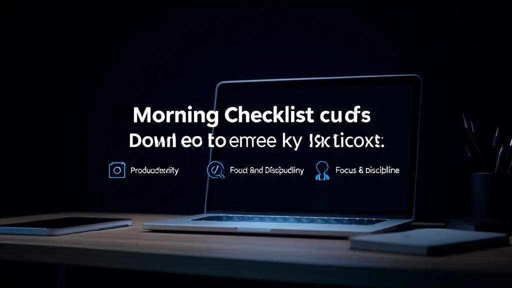
“Your morning routine is too long — here's the fix.”
PT: Your morning routine is way too long—here’s the fix.
🎬 Visual: Morning checklist cut down to three key actions.
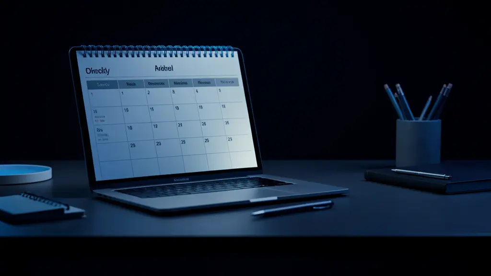
“You're planning wrong — do this instead.”
PT: You’re planning it wrong — do it this way.
🎬 Visual: Messy calendar replaced by simple weekly planner.
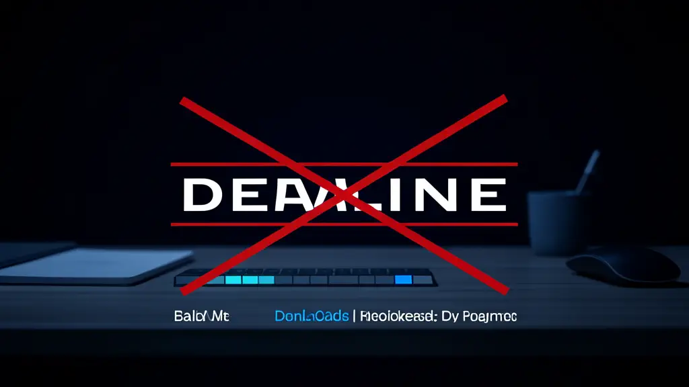
“Pare de definir prazos — defina isto em vez disso.”
PT: Stop setting deadlines — set this instead.
🎬 Visual: Deadline crossed out, replaced with a daily progress bar.
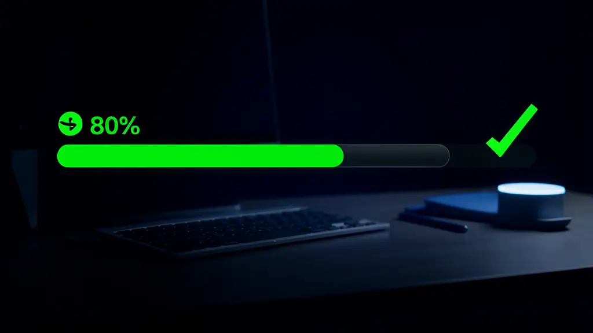
“I get more done by stopping at 80%.”
PT: I get more done by stopping at 80%.
🎬 Visual: Progress bar stopping at 80%, green check mark.
“You're not burned out — you're under-challenged.”
PT: You’re not burned out — you’re not challenged enough.
🎬 Visual: Bored person at desk suddenly lighting up with new project.
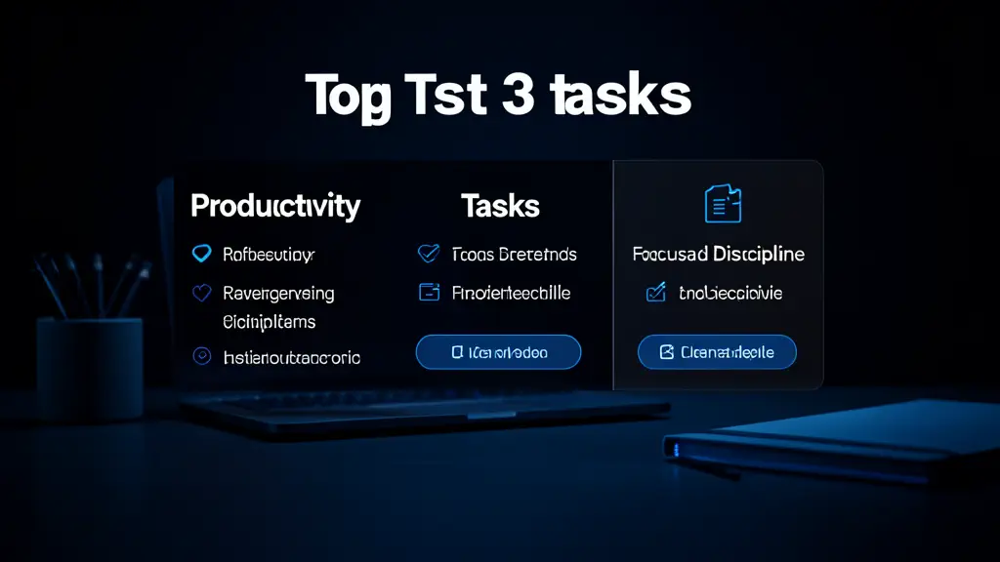
“Most people write to-do lists wrong — here's the right way.”
PT: Most people write their to-do list wrong—here’s the right way.
🎬 Visual: Long list replaced by top 3 tasks highlighted.
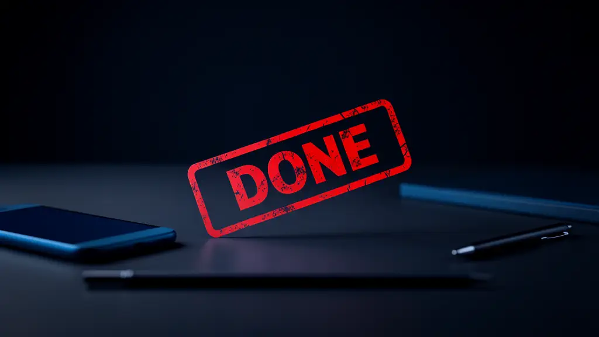
“Stop aiming for perfect — aim for this.”
PT: Stop looking for perfect — look for this.
🎬 Visual: Perfect project replaced with “Done” stamp.
“Most people think they need more energy — they need this instead.”
PT: Most people think they need more energy—they need this.
🎬 Visual: Coffee cup replaced by a clear plan.
🔢 Numbers & specificity
Exact figures, deadlines, and quantities ($10,000, 4 seconds, 30 days). Specific details sound true and measurable—the brain trusts numbers more than adjectives. 5 hooks in this niche use this pattern.
“You can double your focus in 10 minutes… no coffee required.”
PT: Double your focus in 10 minutes… without coffee.
🎬 Visual: Person meditating at desk, timer counting down from 10 minutes.
“Este truque de 2 minutos me torna imparável.”
PT: This 2-minute trick makes me unstoppable.
🎬 Visual: Stopwatch, quick setup routine montage.
“I got 3 hours back every day by doing this.”
PT: I got 3 hours back every day by doing this.
🎬 Visual: Clock hands spinning backwards.
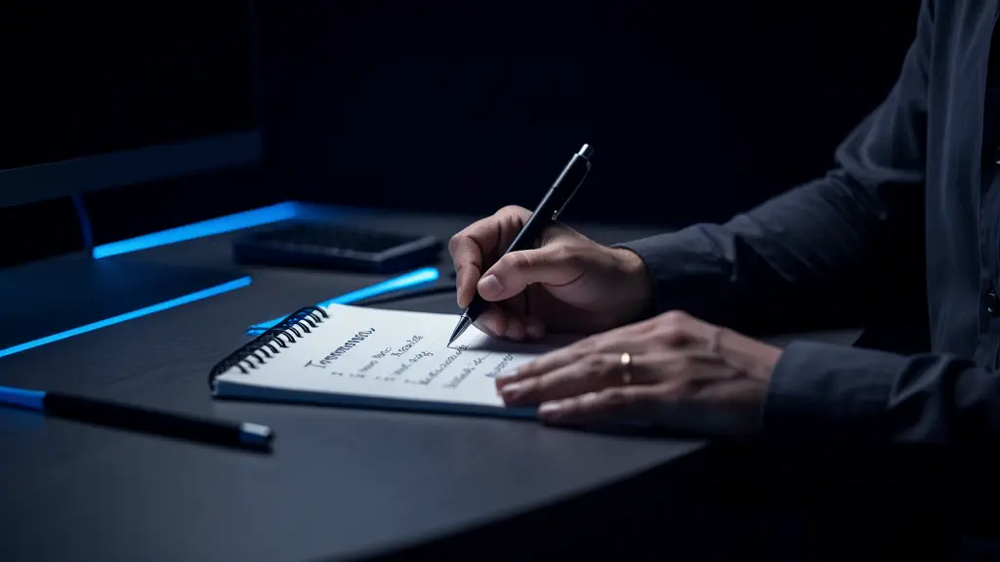
“Este hábito de 5 minutos no fim do dia vai transformar suas manhãs.”
PT: This 5-minute habit at the end of the day changes your mornings.
🎬 Visual: Person writing tomorrow's to-do list before leaving desk.
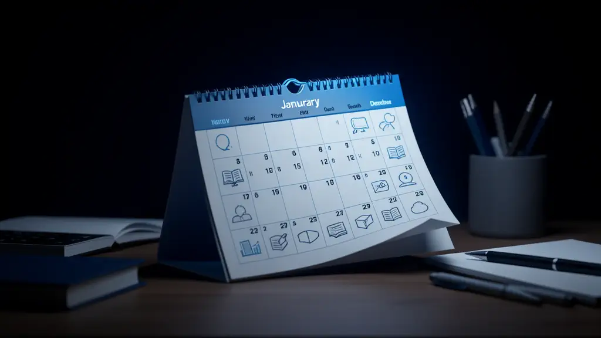
“I learned more in 1 month than most do in a year — here's how.”
PT: I learned more in 1 month than most people do in a year—here’s how.
🎬 Visual: Calendar flipping from January to December with learning icons.
🏆 Personal proof & results
First person, concrete result (“I did it / lost / doubled”). A real story sparks identification and curiosity: “how did HE do it?” 6 hooks in this niche use this pattern.
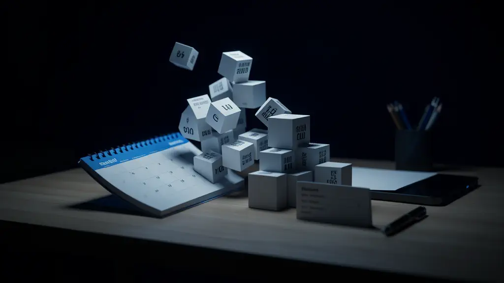
“Este hábito mudou meu ano inteiro.”
PT: This habit changed my entire year.
🎬 Visual: Calendar flipping from chaos to organized blocks.
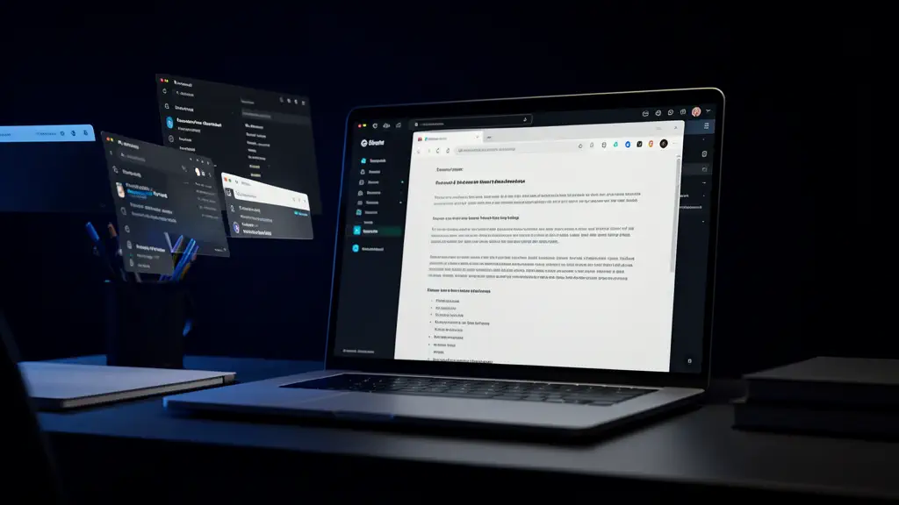
“I stopped multitasking — and got more done.”
PT: I stopped multitasking — and got more done.
🎬 Visual: Multiple browser tabs closing, single document maximized.
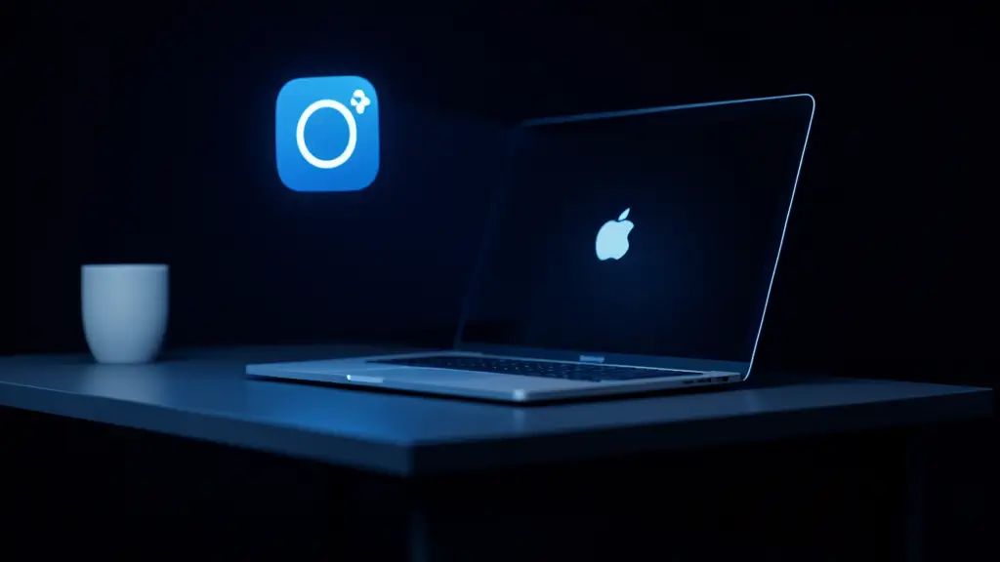
“I quit this habit and doubled my free time.”
PT: I quit this habit and doubled my free time.
🎬 Visual: Social media icon fading away.
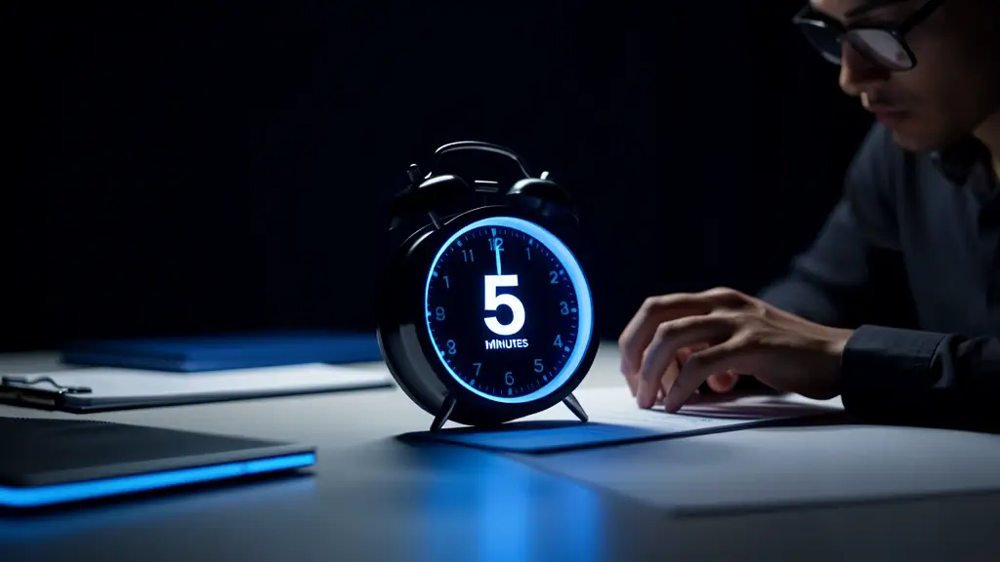
“I finally beat procrastination with this simple trick.”
PT: I beat procrastination with this simple trick.
🎬 Visual: Timer set to 5 minutes, person starting task immediately.
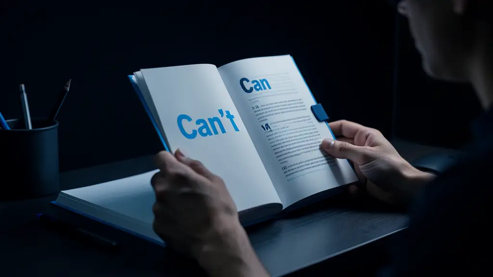
“This one mindset shift doubled my output.”
PT: This mindset shift doubled my output.
🎬 Visual: Person turning page from “Can't” to “Can”.
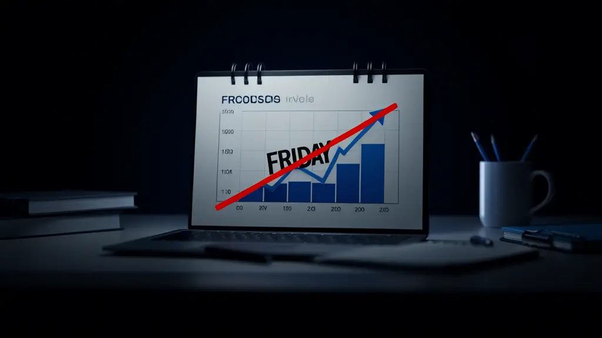
“I stopped working Fridays — and my business grew.”
PT: I stopped working Fridays — and my business grew.
🎬 Visual: Friday crossed out on calendar, revenue chart rising.
🧲 Curiosity & open loop
Opens an information gap and holds back the answer ("this," "here’s what…"). The open loop creates mental itch: viewers stick around to close the loop. 2 hooks in this niche use this pattern.
“Your brain can't handle this much input — here's the fix.”
PT: Your brain can’t handle that much input — here’s the fix.
🎬 Visual: Multiple tabs and apps closing instantly.
“Your environment is working against you — fix it.”
PT: Your environment is working against you — fix it.
🎬 Visual: Messy desk transforming into minimal workspace.